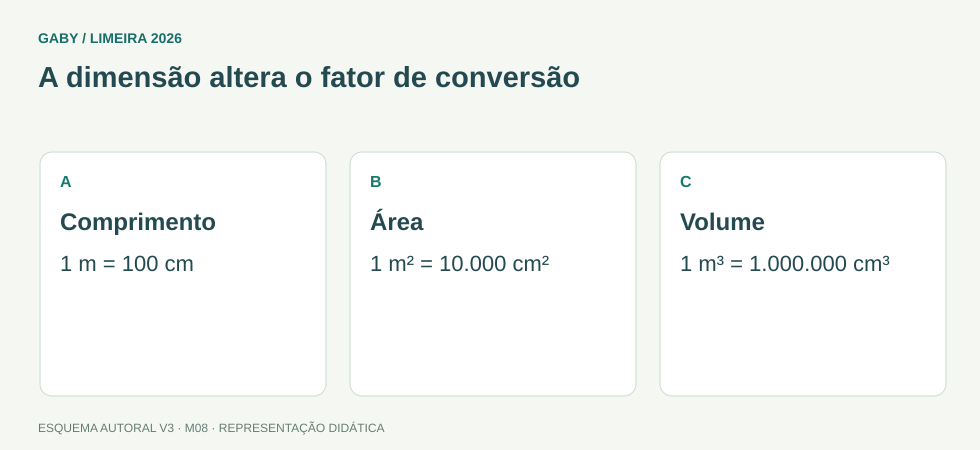

Objetivos do módulo
- Converter unidades usuais.
- Distinguir conversões lineares, quadradas e cúbicas.
- Resolver problemas com capacidade, massa e tempo.
- Usar os prefixos e a escrita dos símbolos do SI (k, M, m, µ).
- Converter massa (t, kg, g, mg), capacidade (L, mL), área (m², ha, km²) e volume (m³, dm³, cm³).
- Operar com tempo em base 60: horários, hora decimal, segundos, calendário e graus e minutos.
- Resolver problemas com unidades compostas: velocidade, vazão, consumo, densidade, preço por unidade e kWh.
- Aplicar escala a comprimento, área e volume e calcular a altura da água a partir do volume.
A dimensão altera o fator de conversão

Descrição em texto do esquema
- Comprimento: 1 m = 100 cm
- Área: 1 m² = 10.000 cm²
- Volume: 1 m³ = 1.000.000 cm³
Oficina visual · aplique o esquema
Converta 2,5 m² em cm² e 3 litros em cm³.
Atividade autoral complementar da V3. Registre sua resposta; a resolução está no arquivo de gabarito e revisão.
Mapa do conteúdo
1. Comprimento
No sistema métrico, cada passo entre km-hm-dam-m-dm-cm-mm multiplica ou divide por10. Ex.: 2,4m=240cm.
2. Área
Como a unidade está ao quadrado, cada passo vale fator100. 1m²=10.000cm², pois 1m=100cm e 100²=10.000.
3. Volume e capacidade
No volume, cada passo cúbico vale fator1000. Relação útil: 1dm³=1L; 1cm³=1mL.
4. Tempo e massa
1h=60min e 1min=60s; não use base100. Massa: 1kg=1000g. Cuidado ao misturar sistemas em uma mesma conta.
Aprofundamento 1 — SI: prefixos e escrita das unidades
O Sistema Internacional de Unidades (SI) é a referência internacional de unidades; no Brasil, sua tradução autorizada é publicada pelo Inmetro. Nele, comprimento se mede em metro (m), massa em quilograma (kg) e tempo em segundo (s). Algumas unidades fora do SI são aceitas para uso com ele e aparecem muito em prova: minuto (min), hora (h), dia (d), grau (°), hectare (ha), litro (L) e tonelada (t).
Prefixos: o que cada um multiplica
O prefixo vai colado ao símbolo da unidade e indica por quanto ela é multiplicada. Assim, 1 km = 1.000 m e 1 mm = 0,001 m. O mesmo prefixo serve para outras unidades: kg, mL, kW, µg.
| Prefixo | Símbolo | Fator | Exemplo |
|---|---|---|---|
| giga | G | 109 = 1.000.000.000 | 1 GW = 1.000.000.000 W |
| mega | M | 106 = 1.000.000 | 1 Mm = 1.000.000 m |
| quilo | k | 103 = 1.000 | 1 km = 1.000 m |
| hecto | h | 102 = 100 | 1 hm = 100 m |
| deca | da | 101 = 10 | 1 dam = 10 m |
| deci | d | 10−1 = 0,1 | 1 dm = 0,1 m |
| centi | c | 10−2 = 0,01 | 1 cm = 0,01 m |
| mili | m | 10−3 = 0,001 | 1 mm = 0,001 m |
| micro | µ | 10−6 = 0,000001 | 1 µm = 0,000001 m |
| nano | n | 10−9 = 0,000000001 | 1 nm = 0,000000001 m |
Entre dois prefixos vizinhos da parte de baixo da tabela, mili e micro, o fator é 1.000: 1 mm = 1.000 µm e 1 mg = 1.000 µg. Para passar de micrômetro para milímetro, divida por 1.000: 480 µm = 0,48 mm.
A tradução luso-brasileira do SI grafa o prefixo como “kilo” (kilograma); no português do Brasil, as grafias usuais são quilo, quilograma e quilômetro. O símbolo é o mesmo: k minúsculo.
Maiúscula e minúscula mudam a unidade
- Mm (M maiúsculo de mega + m de metro) é o megametro, 1.000.000 m.
- mm (as duas minúsculas) é o milímetro, 0,001 m.
- µm é o micrômetro e nm é o nanômetro, ambos menores que o milímetro.
- Quilo é k minúsculo: escreve-se km e kg, nunca Km ou KG.
Regras de escrita dos símbolos
- Símbolo não é abreviatura: não leva ponto (exceto no fim da frase) e não vai para o plural. Escreve-se 5 kg, não 5 kgs nem 5 kg. no meio da frase.
- Deixe um espaço entre o número e o símbolo: 25 km, 3 h. Exceção: grau, minuto e segundo de ângulo ficam colados ao número (30°, 15′).
- O prefixo fica colado à unidade (km) e nunca se juntam dois prefixos.
- O litro pode ser L ou l; a forma L evita confusão com o algarismo 1.
- Nos múltiplos da massa, o prefixo vai no grama: miligrama é mg.
- Unidade composta por divisão usa barra ou expoente negativo: m/s ou m·s−1; km/h.
- Não misture nome e símbolo na mesma expressão: “quilômetros por hora” ou “km/h”, não “km por hora”.
Aprofundamento 2 — Comprimento e massa na prática
Comprimento: km, m, cm, mm
Converter é multiplicar ou dividir por uma potência de 10. Indo para uma unidade menor, o número aumenta (multiplique); indo para uma maior, diminui (divida).
| De | Para | Operação | Exemplo |
|---|---|---|---|
| km | m | × 1.000 | 0,75 km = 750 m |
| m | cm | × 100 | 3,08 m = 308 cm |
| cm | mm | × 10 | 4,5 cm = 45 mm |
| m | mm | × 1.000 | 0,2 m = 200 mm |
| cm | m | ÷ 100 | 820 cm = 8,2 m |
| m | km | ÷ 1.000 | 3.600 m = 3,6 km |
Medida escrita em duas unidades. “3 km e 40 m” é 3.000 m + 40 m = 3.040 m. Atenção ao zero: 40 m não é 400 m. Do mesmo modo, “2 m e 5 cm” é 200 cm + 5 cm = 205 cm.
Leitura na régua. O comprimento é a diferença entre a marca final e a marca inicial. Um objeto entre as marcas 2,3 cm e 9,1 cm mede 9,1 − 2,3 = 6,8 cm = 68 mm. A marca final sozinha só é o comprimento quando o objeto começa no zero.
Uniformizar antes de operar
Só se somam, subtraem ou dividem medidas que estejam na mesma unidade. Converta tudo antes de fazer a conta e escolha a unidade que o enunciado pede na resposta.
Exemplo: 0,8 km + 260 m + 9.000 cm, em metros. Converta cada parcela: 800 m + 260 m + 90 m = 1.150 m. Somar 0,8 + 260 + 9.000 não tem significado, porque cada número está numa unidade diferente.
A mesma regra vale para formar uma razão (como na escala, no Aprofundamento 6) e para comparar medidas.
Massa: t, kg, g, mg, µg
| Relação | Exemplo |
|---|---|
| 1 t (tonelada) = 1.000 kg | 4,2 t = 4.200 kg |
| 1 kg (quilograma) = 1.000 g | 0,35 kg = 350 g |
| 1 g (grama) = 1.000 mg | 2,5 g = 2.500 mg |
| 1 mg (miligrama) = 1.000 µg | 0,8 mg = 800 µg |
Exemplo: um caminhão carrega até 3,2 toneladas e já tem 2.740 kg. Uniformizando, 3,2 t = 3.200 kg; ainda cabem 3.200 − 2.740 = 460 kg.
Massa bruta, tara e massa líquida
- Massa bruta: produto com a embalagem.
- Tara: massa da embalagem vazia.
- Massa líquida: só o conteúdo. Massa líquida = massa bruta − tara.
Exemplo: um pacote tem massa bruta de 2,6 kg e tara de 180 g. Uniformize: 180 g = 0,18 kg. A massa líquida é 2,6 − 0,18 = 2,42 kg. No dia a dia se diz “peso líquido”; em matemática de prova, trata-se da massa.
Unidade não decimal com equivalência dada
Milha, polegada e pé não seguem as potências de 10. A prova informa a equivalência, e basta multiplicar ou dividir por ela. Se 1 milha ≈ 1,609 km:
- milhas para quilômetros: multiplique. 40 milhas ≈ 40 × 1,609 = 64,36 km.
- quilômetros para milhas: divida. 80,45 km ≈ 80,45 ÷ 1,609 = 50 milhas.
Confira o sentido: o quilômetro é menor que a milha, então o número em quilômetros tem de ser maior.
Medida arredondada: que valores ela representa
Uma medida arredondada representa um intervalo, não um valor exato. Para achar o intervalo, some e subtraia metade da última casa registrada.
- 7,6 kg arredondado ao décimo: metade de 0,1 é 0,05. Valores de 7,55 kg (inclusive) até menos de 7,65 kg.
- 12 m arredondado ao metro inteiro: valores de 11,5 m (inclusive) até menos de 12,5 m.
O limite inferior entra porque, na regra usual, o algarismo 5 arredonda para cima; o superior fica de fora, pois 7,65 já arredondaria para 7,7.
Aprofundamento 3 — Capacidade, volume e área
Capacidade: litro e mililitro
1 L = 1.000 mL. De litro para mililitro, multiplique por 1.000; de mililitro para litro, divida por 1.000. Exemplos: 2,35 L = 2.350 mL; 180 mL = 0,18 L.
Ponte entre volume e capacidade
| Volume | Capacidade | Exemplo |
|---|---|---|
| 1 cm³ | 1 mL | 0,72 L = 720 mL = 720 cm³ |
| 1 dm³ | 1 L | 4,2 dm³ = 4,2 L |
| 1 m³ = 1.000 dm³ | 1.000 L | 1,5 m³ = 1.500 L; 380 L = 0,38 m³ |
Por que 1 m³ = 1.000 L: um cubo de 1 m de aresta tem 10 dm em cada direção, logo 10 × 10 × 10 = 1.000 dm³, e cada dm³ é 1 litro.
Volume: o fator vai ao cubo
Volume tem três dimensões. Por isso o fator linear é elevado ao cubo:
- 1 dm = 10 cm, então 1 dm³ = 10³ cm³ = 1.000 cm³. Exemplo: 4.200 cm³ = 4.200 ÷ 1.000 = 4,2 dm³.
- 1 m = 100 cm, então 1 m³ = 100³ cm³ = 1.000.000 cm³.
Área: o fator vai ao quadrado
- 1 m = 100 cm, então 1 m² = 100 × 100 = 10.000 cm². Exemplo: 0,35 m² = 0,35 × 10.000 = 3.500 cm².
- 1 cm² = 10 × 10 = 100 mm².
- 1 km = 1.000 m, então 1 km² = 1.000 × 1.000 = 1.000.000 m².
Hectare: a medida agrária
O hectare (ha) é usado para áreas de terrenos e lavouras. 1 ha = 1 hm² = 10.000 m², a área de um quadrado de 100 m de lado. Como 1 km² = 1.000.000 m², 1 km² = 100 ha.
- 2,4 ha = 2,4 × 10.000 = 24.000 m².
- Um terreno de 18.000 m² dividido em 4 lotes iguais dá 4.500 m² por lote, ou 0,45 ha.
Hectare é unidade de área: não use o fator de comprimento (100 ou 1.000) para convertê-lo.
Gotas e mililitros
Quando a prova dá o volume de uma gota, o número de gotas é o volume total dividido pelo volume de uma gota, com as duas medidas em mL. Com gotas de 0,04 mL, 2 mL correspondem a 2 ÷ 0,04 = 50 gotas. Se houver um ritmo (uma gota a cada tantos segundos), o tempo é o número de gotas vezes esse intervalo; veja o Exemplo A no Aprofundamento 7.
Quantos recipientes completos cabem
Divida a quantidade total pelo tamanho de cada recipiente, na mesma unidade. Se a pergunta é quantos ficam completos, fique com a parte inteira (arredonde para baixo, mesmo que a parte decimal passe de 0,5) e calcule a sobra.
Exemplo: 5 L de suco em copos de 300 mL. 5 L = 5.000 mL; 5.000 ÷ 300 ≈ 16,67. Enchem-se 16 copos completos e sobram 5.000 − 16 × 300 = 200 mL.
Se a pergunta fosse quantos copos são necessários para guardar todo o suco, a resposta seria 17: aí se arredonda para cima, porque a sobra também precisa de um copo.
Volume de um objeto por deslocamento
Um objeto totalmente mergulhado num líquido desloca um volume igual ao seu. O volume do objeto é a subida do nível: nível final − nível inicial. Vale se o objeto afunda por inteiro, não absorve líquido e nada transborda.
Exemplo: numa proveta, o nível passa de 210 mL para 248 mL. O objeto tem 248 − 210 = 38 mL = 38 cm³.
Altura da lâmina de água a partir do volume
Em recipiente de paredes verticais (caixa, tanque retangular, piscina), volume = área da base × altura. Logo, altura = volume ÷ área da base. As unidades precisam combinar: litros em m³ com área em m² dá altura em metros.
Exemplo: um tanque com base de 1,5 m por 0,8 m recebe 90 L de água. A área da base é 1,5 × 0,8 = 1,2 m². O volume é 90 L = 0,09 m³. A altura sobe 0,09 ÷ 1,2 = 0,075 m = 7,5 cm.
Conferência em decímetros: 1,2 m² = 120 dm² e 90 L = 90 dm³; 90 ÷ 120 = 0,75 dm = 7,5 cm. Multiplicar volume por área seria erro: a altura vem da divisão.
Aprofundamento 4 — Tempo: base 60, horários e calendário
As relações do tempo
| Unidade | Equivale a |
|---|---|
| 1 min | 60 s |
| 1 h | 60 min = 3.600 s |
| 1 d (dia) | 24 h = 1.440 min = 86.400 s |
O tempo é sexagesimal (base 60) entre segundos, minutos e horas: cada 60 de uma unidade formam 1 da seguinte. Não use base 100. Os prefixos do SI não se aplicam a minuto, hora e dia. Em horário de relógio, é comum escrever 8h50; nesta aula, durações aparecem como 2 h 25 min.
De horas para segundos, multiplique por 3.600; de segundos para horas, divida por 3.600. Exemplo: 2 h = 7.200 s; 5.400 s = 1,5 h.
Somar e subtrair em base 60
- Somar com transporte: some horas com horas e minutos com minutos; cada 60 min viram 1 h. 2 h 35 min + 3 h 47 min = 5 h 82 min = 6 h 22 min.
- Subtrair com empréstimo: se faltarem minutos, troque 1 h por 60 min. 15h10 − 2 h 35 min: escreva 15h10 como 14h70; 14h70 − 2 h 35 min = 12h35.
Horário de início, duração e término
Três grandezas se relacionam: término = início + duração; início = término − duração; duração = término − início.
- Reunião das 8h50 às 11h15: duração = 11h15 − 8h50 = 10h75 − 8h50 = 2 h 25 min.
- Atividades em sequência com intervalos: a duração total, do início ao fim, soma atividades e intervalos. Aulas de 40, 55 e 50 min com dois intervalos de 15 min: 145 + 30 = 175 min = 2 h 55 min.
- Tarefas iguais em sequência: se a primeira começou às 7h40 e a terceira terminou às 11h55, passaram 4 h 15 min = 255 min para três tarefas, ou 85 min (1 h 25 min) cada. A quarta termina às 11h55 + 1 h 25 min = 13h20.
Atividades sobrepostas
Se as atividades acontecem ao mesmo tempo em parte, não some as durações: marque o início da primeira e o término da última numa linha do tempo. A atividade A começa no minuto 0 e dura 45 min; B começa no minuto 30 e dura 35 min, terminando no minuto 65. Do início de A ao fim de B passam 65 min (1 h 5 min). Somar 45 + 35 = 80 contaria duas vezes os 15 minutos simultâneos.
Hora decimal não é hora e minuto
Em 3,4 h, a parte decimal 0,4 é fração de hora, não 40 minutos. Para passar para minutos, multiplique a parte decimal por 60: 0,4 × 60 = 24 min, então 3,4 h = 3 h 24 min. Outros casos: 0,15 h = 0,15 × 60 = 9 min; 1,30 h = 1 h 18 min (e não 1 h 30 min).
No sentido inverso, divida os minutos por 60: 2 h 48 min = 2 + 48 ÷ 60 = 2,8 h. O mesmo vale para minutos e segundos: 1 min 30 s = 1,5 min = 90 s, e não 1,30 min.
Eventos periódicos e ciclos completos
- Número de eventos = tempo total ÷ intervalo entre eventos, na mesma unidade. Um sensor que registra a cada 15 s faz, em 2 h, 7.200 ÷ 15 = 480 registros (contando um registro ao fim de cada intervalo; se o enunciado disser que também há registro no instante inicial, some 1).
- Ciclos completos: um ciclo de 3 min 20 s dura 200 s; em 25 min = 1.500 s cabem 1.500 ÷ 200 = 7,5, ou seja, 7 ciclos completos, sobrando 100 s.
Fração do dia
Para saber que fração do dia é uma duração, divida-a pela duração do dia na mesma unidade: 24 h ou 1.440 min. Exemplos: 6 h = 6/24 = 1/4 do dia; 36 min = 36/1.440 = 1/40 do dia; 90 min = 90/1.440 = 1/16 do dia.
Relógio que adianta ou atrasa
O erro acumulado é a taxa multiplicada pelo tempo decorrido, ambos na mesma unidade. Depois, converta o resultado para a unidade pedida.
- Um relógio atrasa 6 s por hora e foi acertado às 7h. Às 22h do mesmo dia passaram 15 h (use a duração, não o número 22): atraso de 15 × 6 = 90 s = 1 min 30 s. Para corrigir, adiante-o 1 min 30 s.
- Um relógio adianta 45 s por dia. Em 12 dias, adianta 12 × 45 = 540 s = 9 min. Para corrigir, atrase-o 9 min.
Calendário e ano bissexto
No calendário gregoriano, o ano comum tem 365 dias e o bissexto tem 366, com o dia 29 de fevereiro. Regra: são bissextos os anos divisíveis por 4, exceto os séculos inteiros, que só são bissextos se divisíveis por 400. Assim, 2000 foi bissexto, 2100 não será, e 2028 será.
Para contar os dias entre duas datas, conte quantas viradas de dia acontecem. Do início de 27/02/2028 ao início de 02/03/2028: 27→28, 28→29, 29/02→01/03 e 01/03→02/03, isto é, 4 dias. No mesmo intervalo de 2027, ano comum, são 3 dias, porque não existe 29/02.
Graus e minutos de arco
Ângulos também usam base 60: 1° = 60′ (minutos de arco) e 1′ = 60″ (segundos de arco). Minutos de arco não são centésimos de grau.
- 4°45′ em graus decimais: 4 + 45/60 = 4,75°.
- 12,2° em graus e minutos: 0,2 × 60 = 12′, então 12°12′.
Aprofundamento 5 — Unidades compostas: velocidade, vazão, consumo, densidade, preço e energia
Uma unidade composta é uma razão entre duas unidades (km/h, L/min, g/cm³, R$/L). Para convertê-la, converta o numerador e o denominador separadamente e refaça a divisão.
Velocidade média
Velocidade média = distância ÷ tempo. Daí vêm distância = velocidade × tempo e tempo = distância ÷ velocidade. A unidade do resultado sai das unidades usadas: metros e segundos dão m/s; quilômetros e horas dão km/h.
- 1.120 m percorridos em 2 min 20 s: o tempo é 140 s, e a velocidade é 1.120 ÷ 140 = 8 m/s.
- Com velocidade constante, distância e tempo são proporcionais: quem faz 150 km em 2 h faz 150 ÷ 2 × 5 = 375 km em 5 h.
km/h e m/s: o fator 3,6
1 km/h = 1.000 m ÷ 3.600 s = 1/3,6 m/s. Por isso:
- de km/h para m/s, divida por 3,6: 54 km/h = 54 ÷ 3,6 = 15 m/s;
- de m/s para km/h, multiplique por 3,6: 25 m/s = 25 × 3,6 = 90 km/h.
Vazão
Vazão = volume ÷ tempo, em L/s, L/min ou m³/h. Volume = vazão × tempo, com o tempo na unidade da vazão.
- 3 m³/h = 3.000 L em 60 min = 3.000 ÷ 60 = 50 L/min.
- 1,8 m³/h = 1.800 L ÷ 3.600 s = 0,5 L/s.
- Uma bomba de 0,6 L/s ligada por 4 min 10 s (250 s) fornece 0,6 × 250 = 150 L.
Consumo de combustível: km/L, L/100 km e mL/km
- km/L (rendimento): quilômetros percorridos com 1 litro. Quanto maior, mais econômico.
- L/100 km: litros gastos para percorrer 100 km. Quanto maior, menos econômico.
Uma unidade é a razão inversa da outra: L/100 km = 100 ÷ (km/L). Um carro que faz 12,5 km/L gasta 100 ÷ 12,5 = 8 L/100 km. Um que gasta 5 L/100 km faz 100 ÷ 5 = 20 km/L.
Para mL/km, converta o numerador e o denominador: 8 L/100 km = 8.000 mL em 100 km = 8.000 ÷ 100 = 80 mL/km.
Densidade
Densidade = massa ÷ volume. Uma peça de 390 g com volume de 150 cm³ tem densidade 390 ÷ 150 = 2,6 g/cm³. Somar ou multiplicar massa e volume não dá densidade.
Conversão de g/cm³ para kg/m³: 1 g = 0,001 kg e 1 cm³ = 0,000001 m³, logo 1 g/cm³ = 0,001 ÷ 0,000001 = 1.000 kg/m³. Também 1 g/cm³ = 1 kg/L. Exemplos: 0,8 g/cm³ = 800 kg/m³; 2,5 L desse líquido têm massa 2.500 cm³ × 0,8 g/cm³ = 2.000 g = 2 kg.
Preço por unidade de medida
Preço por litro (ou por quilo, por metro) = preço ÷ quantidade, com a quantidade na unidade pedida. Uma embalagem de 400 mL custa R$ 5,00: como 400 mL = 0,4 L, o preço por litro é 5 ÷ 0,4 = R$ 12,50. Um pacote de 250 g a R$ 4,50 custa 4,50 ÷ 0,25 = R$ 18,00 por quilo.
Para comparar embalagens, calcule o preço unitário de cada uma: 1,5 L por R$ 9,00 dá R$ 6,00/L; 2 L por R$ 11,00 dá R$ 5,50/L. A de 2 L sai mais barata por litro.
Energia elétrica em kWh
Potência, em watt (W) ou quilowatt (kW), mede a rapidez com que um aparelho usa energia. A energia consumida é potência × tempo: em kWh, use a potência em kW e o tempo em horas. Como 1 W = 1 J/s, 1 kWh = 1.000 W × 3.600 s = 3.600.000 J. kW e kWh medem grandezas diferentes.
Exemplo: um chuveiro de 5.500 W fica ligado 20 min por dia. Potência: 5.500 ÷ 1.000 = 5,5 kW. Tempo em 30 dias: 30 × 20 = 600 min = 10 h. Energia: 5,5 × 10 = 55 kWh. Com uma tarifa fictícia de R$ 0,80 por kWh, o custo é 55 × 0,80 = R$ 44,00.
Aprofundamento 6 — Escala: comprimento, área e volume
Escala numérica 1:N
A escala 1:N significa que 1 unidade no desenho corresponde a N unidades iguais no tamanho real. As duas medidas têm de estar na mesma unidade; por isso a escala não tem unidade.
- Achar a escala: 3 cm no mapa representam 1,2 km reais. Converta a medida real para centímetros: 1,2 km = 120.000 cm. A razão é 3 : 120.000 = 1 : 40.000.
- Achar a distância real: na escala 1:50.000, 6,4 cm no mapa valem 6,4 × 50.000 = 320.000 cm = 3,2 km.
Escala aplicada a área e volume
A escala vale para comprimentos. Se a escala linear é 1:k, as áreas ficam na razão 1:k² (duas dimensões) e os volumes na razão 1:k³ (três dimensões, o fator vai ao cubo).
- Maquete na escala 1:20, área: 20² = 400. Um piso real de 12 m² aparece com 12 ÷ 400 = 0,03 m² = 300 cm².
- Mesma maquete, volume: 20³ = 8.000. Um reservatório real de 4 m³ aparece com 4 ÷ 8.000 = 0,0005 m³ = 0,5 dm³ = 0,5 L.
- Mapa 1:10.000: uma região de 2 cm² no mapa tem área real 2 × 10.000² = 200.000.000 cm² = 20.000 m² = 2 ha.
Dividir o volume real só por k (ou só por k²) é o erro mais comum.
Aprofundamento 7 — Mais exemplos resolvidos
Exemplo A — Gotejamento
Situação: um soro goteja uma gota de 0,08 mL a cada 4 segundos. Quanto tempo leva para gotejar 0,5 L?
Exemplo B — Milhas e velocidade constante
Situação: um barco percorre 90 milhas em 4 horas, em velocidade constante. Usando 1 milha ≈ 1,6 km, quantos quilômetros percorre em 10 horas?
Exemplo C — Viagem que passa da meia-noite
Situação: um ônibus sai às 21h40 e a viagem dura 5 h 35 min. A que horas chega?
Exemplo D — Densidade e massa de um tanque
Situação: um líquido tem densidade 1,3 g/cm³. Qual é a massa, em kg, de 0,4 m³ desse líquido?
Aprofundamento 8 — Resumo do aprofundamento
- Prefixos: G 109, M 106, k 103, m 10−3, µ 10−6, n 10−9. Mm é megametro; mm é milímetro.
- Símbolos: sem ponto, sem plural, com espaço entre número e símbolo (exceto °, ′, ″).
- Uniformize as unidades antes de somar, subtrair, dividir ou comparar.
- Massa: 1 t = 1.000 kg; 1 kg = 1.000 g; 1 g = 1.000 mg; 1 mg = 1.000 µg. Massa líquida = bruta − tara.
- 1 L = 1.000 mL; 1 cm³ = 1 mL; 1 dm³ = 1 L; 1 m³ = 1.000 L.
- Área: fator ao quadrado (1 m² = 10.000 cm²). Volume: fator ao cubo (1 dm³ = 1.000 cm³). 1 ha = 10.000 m²; 1 km² = 100 ha.
- Recipientes completos: parte inteira da divisão, com sobra.
- Altura da água = volume ÷ área da base. Volume por deslocamento = nível final − nível inicial.
- Tempo em base 60: 1 h = 3.600 s; 1 dia = 1.440 min. Parte decimal da hora × 60 = minutos.
- Atividades sobrepostas: do início da primeira ao fim da última, sem somar durações.
- Relógio: erro = taxa × tempo decorrido. Bissexto: divisível por 4; séculos só se divisíveis por 400.
- 1° = 60′. Velocidade = distância ÷ tempo; km/h ÷ 3,6 = m/s.
- L/100 km = 100 ÷ (km/L). Densidade = massa ÷ volume; 1 g/cm³ = 1.000 kg/m³.
- Preço por litro = preço ÷ litros. Energia (kWh) = potência (kW) × tempo (h).
- Escala 1:k: comprimento ÷ k, área ÷ k², volume ÷ k³.
Exemplos resolvidos passo a passo
Exemplo 1
Situação: 3,5m em cm.
Exemplo 2
Situação: 2m² em cm².
Exemplo 3
Situação: 1,5h em minutos.
Pegadinhas e erros frequentes
- Usar ×10 em área.
- Usar base100 para horas.
- Confundir litro e metro cúbico.
- Ler 2,4 h como 2 h 40 min: 0,4 h = 0,4 × 60 = 24 min.
- Somar medidas em unidades diferentes sem uniformizar antes.
- Trocar Mm (megametro) por mm (milímetro): maiúscula e minúscula mudam o prefixo.
- Arredondar para cima o número de recipientes completos.
- Somar as durações de atividades que acontecem ao mesmo tempo.
- Inverter km/L e L/100 km, ou multiplicar km/h por 3,6 para obter m/s.
- Converter só o numerador de uma unidade composta (g/cm³ para kg/m³).
- Aplicar a escala linear diretamente a área ou volume.
- Multiplicar volume por área para achar a altura da água.
- Confundir kW (potência) com kWh (energia).
Resumo de prova
- Comprimento: passos ×10.
- Área: passos ×100.
- Volume: passos ×1000.
- 1L=1dm³.
- 1h=60min.
Exercícios do módulo
Resolva sem consultar o arquivo de gabarito. As questões são autorais e construídas para treinar os conceitos do edital.
- 20cm
- 2000cm
- 0,2cm
- 200cm
- 30g
- 0,3g
- 3000g
- 300g
- 90min
- 150min
- 230min
- 130min
- 100cm²
- 10.000cm²
- 1000cm²
- 1cm²
- 1m³
- 100cm³
- 1km³
- 1dm³
- 50L
- 0,05L
- 0,5L
- 5L
- 25000m
- 2500m
- 250m
- 25m
- 1,5h
- 0,9h
- 1,9h
- 90h
- 1L
- 100L
- 10L
- 1000L
- litro interfere
- tempo é base60
- unidade está elevada ao quadrado
- metro muda definição
Quando terminar, abra Matemática 08 - Sistemas de Medidas - Gabarito e Revisão.
Checklist de domínio
- ☐ Converter unidades usuais.
- ☐ Distinguir conversões lineares, quadradas e cúbicas.
- ☐ Resolver problemas com capacidade, massa e tempo.
- ☐ Ler e escrever símbolos com prefixos do SI sem trocar maiúsculas e minúsculas.
- ☐ Converter t, kg, g, mg e µg e calcular massa líquida a partir da tara.
- ☐ Converter m³, dm³, cm³, L e mL; m², cm², ha e km².
- ☐ Somar e subtrair horas em base 60 e converter hora decimal em horas e minutos.
- ☐ Calcular velocidade, vazão, consumo, densidade, preço por litro e kWh.
- ☐ Usar escala 1:k em comprimento, área (k²) e volume (k³).
Meta do módulo: 80% ou mais nas questões, sem depender de consulta.
Referências e conteúdos auxiliares
- IMPA/OBMEP — Portal da Matemática, módulosVideoaulas, exercícios e materiais por tema. Localize o assunto indicado no roteiro complementar do módulo.
- Inmetro/IPQ — Sistema Internacional de Unidades (SI), tradução luso-brasileira autorizada pelo BIPM da 9ª edição (2019), 2021Conferidos: tabela de prefixos (giga a nano, símbolo µ de micro), Tabela 8 das unidades aceitas para uso com o SI (min, h, d, °, ′, ″, ha = 10.000 m², L = dm³, t = 1.000 kg), watt = J/s, regras de escrita dos símbolos (sem ponto e sem plural, espaço entre número e unidade, prefixos não compostos, m/s) e escrita dos números (vírgula decimal, grupos de três sem ponto). Cópia da publicação do Inmetro hospedada no portal gov.br. Conferido em 18/11/2026.
- Observatório Nacional — Anuário 2020, Explicações da Seção A (calendário)Conferida a regra do ano bissexto no calendário gregoriano: divisíveis por 4, exceto séculos inteiros não divisíveis por 400 (2000 bissexto; 2100 não). Conferido em 18/11/2026.
- IMPA/OBMEP — Portal da Matemática: Sistemas de Medidas e Medidas de TempoMétodo de conversão de unidades e operações com horas, minutos e segundos. Conferido em 18/11/2026.
- IMPA/OBMEP — Portal da Matemática: Unidades de Medida de Comprimento e de ÁreasConversões de comprimento e de área. Conferido em 18/11/2026.
- IMPA/OBMEP — Portal da Matemática: Unidades de medida de volumeVolume, capacidade, litro e conversões entre unidades de volume e de capacidade. Conferido em 18/11/2026.
- IMPA/OBMEP — Portal da Matemática: Grandezas e Unidades de MedidaMudança de unidades quadráticas e cúbicas e razões de unidades (unidades compostas). Conferido em 18/11/2026.
Referências externas de apoio consultadas para a V3 em 27/09/2026. A origem das questões é o material autoral do projeto; estes links não indicam que uma instituição publicou ou validou os exercícios. As páginas externas precisam de internet. Em informática, confira a versão do programa; em legislação, observe o recorte e as regras de atualização do edital.